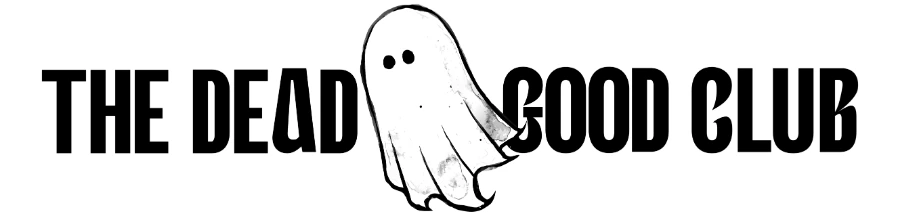

Learn how to spot the common signs of AI-generated writing, from em dashes and buzzwords to familiar phrases and repeated patterns.
Saturday Edition · Three puzzles · 38 clues
Everyone has their own unique way of speaking and writing. This comes from a mix of cultural and generational influences. We recognise it when people speak in an accent or dialect. Certain words can suggest where someone is from. For example, if someone used the term “wee” in place of the word “little” or “small”, you would instantly get a sense that the conversation has gone a bit Scottish.
In writing, both typed and handwritten, we can see different styles emerge, heavily influenced by the technology that was prominent during youth, the books that were popular, and cultural trends. Like regional accents, these styles and writing markers get embedded when we’re young, but can be influenced throughout life by the people you spend time with, workplace culture, and living in new environments; altering and expanding your vocabulary and writing tics.
AI-generated writing has its own style too.
Learning how to spot AI writing is a skill worth developing as it helps you become a better writer. It also helps you read marketing content, social media posts, emails, and articles with more discernment.
It’s also worth noting that new forms of detecting AI writing are being rolled out. In addition to tools like Pangram being used widely in schools to detect AI writing, Claude models will now generate text that contains a watermark or invisible, machine-readable signature embedded directly into generated text. The intent is to comply with new laws (like Article 50 of the EU AI Act) and to help readers have more transparency about whether something was machine-made.
It’s important to understand the author though and be kind about how you go about identifying AI writing. After all, AI learned how to write from humans. All of its patterns and tropes came from us. And just because you suspect writing of being generated, does not mean it was or that a human didn’t put work into it.
A particular form of corporate word salad emerged out of Silicon Valley in the 2010s and has shown no sign of going away. By “corporate word salad” I mean the overuse of buzzwords and empty phrases such as “synergy”, “bandwidth” and “pivot”.
This newspeak was masterfully parodied in “Weird Al” Yankovic’s Mission Statement, capturing both the emptiness of the words and the whiteboard visual style that was heavily used at the time.
“Weird Al” Yankovic — Mission Statement
youtube.com/watch?v=GyV_UG60dD4
This word salad demonstrates how ways of communicating can be influenced and homogenised by workplace culture. And it’s worth keeping in mind, not every time you see the word “synergy” does it automatically mean AI wrote it.
Another trope, the em dash “—” is one of the most recognisable tells of AI writing. In all of our literature, essays, and scientific documents that were written before the move from typewriters to computers during the mid-1980s to the early 1990s, you will see the em dash used heavily. Mark Twain used more em dashes than GPT-4.1 (10.13 vs 10.62 per 1,000 words) according to the Slop Detector.
But once we started moving to smaller and smaller keyboards, it just became too much of a hassle to use the em dash, some opting to just use a hyphen “-” instead, some dropping it entirely. If you had to write an em dash right now, would you know how? Probably not, and this is exactly why humans don’t naturally use it when writing today, but an AI doesn’t have this hurdle of a physical keyboard, so it leans towards the trends in writing that can be seen more prominently over the course of time opposed to the last 30 or 40 years.
To type an em dash (—), use Option + Shift + Hyphen on a Mac. On Windows, press Alt + 0151 on a numeric keypad, or press Windows Key + Period (.) This is opposed to just hitting a hyphen key twice on a traditional keyboard.
These types of shifts in writing habits can be seen generationally as well. You may have heard that “old people” use two spaces after a full stop. This too is a reaction of moving from typewriters to computers where varied and proportional fonts became available. On a typewriter, each letter is the same width, so two spaces were needed to visually separate sentences. Modern digital fonts adjust spacing automatically now, eliminating the need for two spaces.
Have a look at the examples to learn more about how writing has shifted generationally.
You can probably get a clear sense how the AI writing is different, just by looking at the shape the writing takes. These are exaggerated examples though and out in the wild it can be harder to spot. A 2026 study published in August, Bot or not: Can people tell the difference between stories written by a human or by an AI system?, found participants failed to reliably spot AI text, identifying true origins at rates between 39.4% and 52% (no better than random chance), and most of them thought the AI’s writing was the better writing.
It also swings the other way, a famous study published in Patterns by Stanford researchers found that popular AI detectors falsely accused non-native English speakers, flagging 61.3% of genuine human-written TOEFL essays as machine-generated.
Below you’ll find three crossword puzzles, each “delving” into the common tropes seen in AI writing. 1. The words you’ll see time and again, 2. the overall shape of the writing, 3. the types of responses you’ll get when interacting with AI (the chat-back).
Any single habit in these puzzles, if seen out in the wild, does not mean it was AI. But when you start noticing several tropes crowded into the same paragraph, then you know something is up.
Here are some examples on how writing has shifted generationally. Use this for educational purposes, not to age-shame please.
Arthur and I went to the IMAX theater last night to see the new movie, ‘The Odyssey.’ The imagery was absolutely spectacular, and Matt Damon gave a very powerful performance as Odysseus... however, I must say that I preferred the original book by Homer. Christopher Nolan took far too many liberties with the historical timeline. Have you seen it yet? 🎬👍
Just saw Nolan’s The Odyssey. Totally massive in scale! Matt Damon killed it, but using modern English dialogue in ancient Greece felt a bit jarring, imo... still, that Cyclops sequence was incredible. Definitely worth the price of admission <3
omg just got out of the odyssey, christopher nolan really went all out with the visuals but i am literally so stressed by the pacing?? also did anyone else notice the audio mixing was kind of loud or am i just getting old lol... tom holland as telemachus was everything though
the new odyssey movie is literally insane 💀 like why did nolan make the cyclops look like that i am crying 😭 also the timeline makes no sense standard nolan behavior but zendaya ate as always ngl
I finally went to see Nolan’s The Odyssey.
And I have thoughts.
Because obviously I do.
It’s enormous. It’s beautiful. It’s very Nolan. There are epic landscapes, tortured men, enormous practical sets, questionable decisions, and approximately seventeen thousand opportunities for someone to just go home.
But here’s the thing.
I actually really enjoyed it.
And then I started thinking about Homer.
Because we tend to think we know The Odyssey. Heroic warrior. Long journey home. Faithful wife waiting patiently. Monsters. Gods. The whole thing.
But Homer’s Odysseus is… weird.
He’s clever. Obviously.
But he’s also vain. Manipulative. Curious. Reckless. Sometimes downright awful.
He lies constantly.
He gets himself into trouble.
Then uses his enormous brain to get himself back out again.
And that’s what I kept thinking about while watching Nolan’s version.
Because Nolan has taken this ancient, deeply weird story and filtered it through his own obsessions — war, trauma, sacrifice, masculinity, guilt, duty, time, homecoming.
Which makes sense.
But it also changes the story.
And that got me thinking about something else.
The stories we inherit are never really the stories we inherit.
We bring ourselves to them.
Our culture.
Our fears.
Our expectations.
Our ideas about what a hero should look like.
We take an old story and quietly rewrite it to make sense to us.
Sometimes that’s the point.
Sometimes that’s the problem.
And honestly?
That’s what I want to explore next week.
Because if we can see how an ancient story gets rewritten by a modern filmmaker, maybe we can start noticing how often we’re doing the exact same thing with our own lives.
The narratives we inherited.
The roles we slipped into.
The identities we decided were just “who we are”.
The things we’re still chasing because, somewhere along the way, we decided they were what we were supposed to want.
If you’ve seen The Odyssey already, tell me what you thought.
Because I have a feeling this one is going to be divisive.
There are certain words you’ll see in AI writing again and again. That happens partly because language models generate text one small chunk at a time. Like your phone’s predictive text, guessing the single best word to follow the text that came before it, models repeatedly choose from a pool of likely best options, using patterns learned during training and instructions to favour safe, polite, and statistically average choices. It tends to repeat terms that appear frequently in sanitised web pages, books, scientific papers, encyclopaedic sources, and technical or government-style documents which can all skew the word choices toward academic, business, and formal language.
Famous ones in here delve, quietly, tapestry
Just as words can be overused, there are also certain shapes that turn up repeatedly in AI writing. These sentence patterns and rhetorical flourishes can sometimes be spotted before even reading the text. Models use these patterns, often in marketing copy, as a way to write for scannability and deliver gravitas. Because they are safe ways to make a point sound clear without taking much stylistic risk, these patterns result in prose built from familiar templates: the “It’s not X, it’s Y” set up; an em dash used to add drama, or a rhetorical question immediately answered by the writer. None of these forms proves something was written by AI, but repeated use can make a piece feel overly symmetrical and performative.
Famous ones in here negativeparallelism, emdash, tricolon
These are the most over-used conversational responses that models use when giving their output. When chatting with an AI assistant, it’s common for models to start by acknowledging, validating, and amplifying your request with “Absolutely” or “You’re exactly right.” But there are several other tics, patterns, and preferences and once you see them, it’s hard to un-see them. Different models have their own personality as well, so some of these you’ll see more often than not, depending on which you’re using. To varying degrees though, each model rewards rapport over efficiency. So whenever you’re ready we can jump right in.
Famous ones in here absolutely, loadbearing, bullets
Every entry, with the note the website shows once you solve it.
Similarly ‘honestly’, ‘truly’, and ‘really’ are used to add warmth and emphasis. ‘This is good’ becomes ‘this is genuinely good’. The extra word is a conversational sincerity marker and can make AI prose sound candid, helpful, and personally invested.
Sounds like “Honestly, this is a genuinely exciting development that I truly believe matters.”
Instead of “This is a big deal, and I think it will hold up.”
Here is the clearest example of AI preferring the longer version of a word instead of a more natural or colloquial word. Over time the longer word won thousands of small contests and became the default.
Sounds like “Please utilise the attached template to facilitate the process.”
Instead of “Use the form attached. It takes two minutes.”
AI often uses this ornate noun as a shortcut for “a complex mixture of connected things.” It is an attractive, high-register metaphor making an ordinary point sound rich, thoughtful, and literary without requiring the model to name the actual parts or relationships.
Sounds like “The local music scene is part of the rich tapestry of British culture.”
Instead of “Local venues, radio stations, promoters, and musicians have shaped British music for decades.”
The use of this word rose 1,375% between 2020 and 2024. A 2025 analysis found that this word (and others strongly associated with ChatGPT-style prose like underscore, meticulous, and pivotal) began declining after being publicly identified as AI tells. This is partially down to human editing, like the ‘em dash’, once writers become aware of an AI trope they seek them out and remove or replace these tells. Newer models are also less likely to use some older giveaways.
Sounds like “In this article we delve into the intricacies of remote work.”
Instead of “This article looks at remote work.”
The flagship of the breathless hype family, using superlatives as a substitute for proof: revolutionary, cutting-edge, innovative, game-changing, unprecedented. This default promotional tone that treats an ordinary product, idea, or update as unusually important. These words signal excitement, but often fail to give proof. AI-generated text commonly leans on these kinds of buzzword to make prose sound energetic and authoritative.
Sounds like “Our groundbreaking new feature is a game-changer for productivity.”
Instead of “You can export to a spreadsheet now, which people have asked for since 2021.”
This corporate cliché is conveniently vague and can be used to imply action without naming the actual mechanism or result. It suggests that collaboration will create value without committing the writer to a measurable claim or an accountable outcome, becoming a polished substitute for an explanation. Just like the words ‘ecosystem’ and ‘holistic’, it’s a low-risk filler. Corporate jargon has long worked this way; AI is merely reproducing an established human habit.
Sounds like “The merger will unlock powerful synergies across both organisations.”
Instead of “They’ll share one warehouse and close the smaller one.”
Frequently noticed in AI prose, especially phrases like “quietly reshaping,” “quietly transforming,” or “quietly becoming” because it creates an intriguing sense of momentum without having to identify who acted, when, or what changed.
Sounds like “The company has quietly become one of the biggest landlords in the country.”
Instead of “The company owns 40,000 homes and almost nobody has heard of it.”
Rose roughly 1,000% in academic writing after 2022, one of several “excess words” whose sudden rise is consistent with AI-assisted writing along with ‘delve’ and ‘pivotal’. It belongs to a category you could call “significance verbs”: ‘underscore’, ‘highlight’, ‘demonstrate’, ‘reveal’, ‘showcase’, ‘reinforce’, and ‘emphasise’. They make a sentence sound interpretive and authoritative.
Sounds like “These findings underscore the importance of early intervention.”
Instead of “This shows early treatment matters.”
Common in AI-generated marketing, coaching, and product copy because it is an upbeat, low-risk verb. It makes an offer sound beneficial without requiring the writer to specify what will change. It belongs to the family of ‘the promise of possibility’ words which also include ‘unlock’, ‘unleash’, ‘elevate’, ‘enhance’, ‘amplify’, ‘transform’, ‘revolutionise’, ‘supercharge’, ‘harness’, ‘optimise’, ‘streamline’, and ‘enable’.
Sounds like “By embracing these tools, you can empower yourself to thrive.”
Instead of “Try one of these for a fortnight and see if it helps.”
An importance-signalling adverb that tells the reader that a point matters before demonstrating why. It belongs with notably, crucially, significantly, critically, and especially. This type of language suits AI because it helps structure an answer, sound authoritative, and move from one broadly relevant point to the next. A word also common in human academic and professional writing, so it is not a reliable AI tell on its own. It becomes noticeable when it appears alongside other formulaic AI-style habits.
Sounds like “More importantly, this underscores our ongoing commitment to excellence.”
Instead of “The bit that matters is the deadline. It moved to 3 October.”
It belongs with the ‘utilise’, ‘harness’ and ‘operationalise’ family whose only function is to make a sentence sound more strategic and high-value than it is. It’s useful as an AI default because it appears frequently in business, strategy, policy, and marketing material. It also fits repeatable templates such as “leverage [resource] to [outcome].”
Sounds like “We leverage AI to optimise workflows.”
Instead of “We use AI to speed up scheduling.”
As in “Here’s the ____”. A false-suspense transition. It signals that an important or surprising reveal is coming. Models learn this as a ready-made template from marketing and social posts. It gives a response rhythm and makes a conclusion feel dramatic, even when the point does not need drama. It is widely noted in AI-writing trope lists, “but here’s the thing.”, “the best part?”, “what most people miss is…”, “here’s the uncomfortable part”, and “let that sink in”. The modern equivalent of the catchphrase: “and that’s not all” or “but wait, there’s more”.
Sounds like “Costs rose 4% last year. And here’s the kicker: nobody noticed.”
Instead of “Costs rose 4% and it took eleven months for anyone to raise it.”
Unlike some suspected AI words, this one is supported by research as overrepresented in certain AI-generated academic-style text. Researchers found that it appeared among a set of AI-favoured buzzwords such as ‘landscape’, ‘sphere’, ‘domain’, ‘arena’, ‘frontier’ and ‘fabric’. They all imply territory and scale.
Sounds like “In the realm of education technology, change is constant.”
Instead of “Education technology changes fast.”
Short, punchy sentences can be effective when used deliberately. They imitate spoken rhythm and turn a longer point into a sequence of skimmable beats. Using these can also help neurodivergent readers by cutting down cognitive load and making text processing faster. But, AI often uses fragments for pace and emphasis. Specifically, several very short lines or fragments in a row, often combined with manufactured suspense or negative parallelism is commonly seen in AI prose.
Sounds like “That’s not a small detail. It’s the whole design. Deliberately. From the start.”
Instead of “That detail was deliberate, and it shaped the rest of the design.”
There is meaningful evidence that this pattern is unusually common in AI text. Pangram researchers estimate the construction occurs roughly three times as often in AI writing as in human writing. Those figures should be treated as estimates from particular datasets, not a universal detection rule.
Sounds like “This is not just a software update, but a new way of working.”
Instead of “The update changes how the rota is approved. Everything else stays.”
AI often produces rhetorical self-answers in its writing where a question is posed and then immediately answered. Questions make prose feel conversational and create a neat transition into an explanation, but it becomes an AI-ish tic when the question exists only to tee up an obvious answer. Language models can lean on it as a reliable structure for engagement, emphasis, and orderly explanation. It comes as a stock of question fragments “The result?”, “The reality?”, “The catch?”, “The truth?”, “The worst part?”
Sounds like “The catch? There isn’t one. The best part? It’s free.”
Instead of “There’s no catch, and it costs nothing.”
Two things denied before the real point is unveiled. It gives an ordinary claim the rhythm of a revelation. The first two fragments create tension by ruling things out; the third “unveils” the answer. An AI-writing trope, but also an established human advertising and slogan technique. Models often default to punchy, highly reusable structures learned from persuasive marketing copy and this template is easy to complete, reads as confident, and produces a tidy ending without requiring much evidence or specificity.
Sounds like “Not a bug. Not a feature. A fundamental design flaw.”
Instead of “It’s a design flaw, and it’s been there since the first version.”
These types of words by themselves are not AI tells. Models can differ: certain Gemini models use more visual and concrete sensory language than human writers, while several other models used less. Each is different, but the distinction is that AI has no body or firsthand sensations. It can produce phrases such as “the crisp sea air” or “the warm glow of sunlight” because it has learned common textual associations, not because it smelled the air or felt the warmth. That can make its descriptions feel clichéd and generic.
Sounds like “Sunlight streamed through the window as the team gathered, the aroma of fresh coffee filling the air.”
Instead of “We met in the room with the broken blind, so half the table could not see the screen.”
Real informal writing carries traces of being made by hand; a repeated or misspelled word or a comma in the wrong place. AI text has none, because it doesn’t type on a keyboard, get distracted, or transpose letters. The same applies to unwavering house style across a long document, where a person’s capitalisation and list punctuation usually drift.
Sounds like Two thousand words of prose with flawless commas, consistent capitalisation, and every word spelled correctly.
Instead of “Sorry! sent that too fast, I meant Thursday not Tuesday.”
Writing in the third person to avoid claiming personal stakes, feelings, or a point of view. Models often default to a neutral, mildly positive tone, even when summarising emotionally charged material. It avoids strongly negative points of view, showing less variation in emotion across a piece than human writing does.
Sounds like “It could be argued that further consideration of the timetable may be warranted.”
Instead of “I think the timetable is wrong and I’d like to change it before term starts.”
Deliberate repetition is one of the oldest tools in English, often used in speeches, poetry, and advertising; it can make an idea memorable and build emotional force. An anaphora is a convenient template for creating momentum and rhythm. But AI prose reveals itself when this device is used in excess and in place of meaningful content. Models love patterns, so once it has produced a sentence, the single most probable way to open the next one is to use the same structure. The result reads like a template with the variables filled in, and it usually arrives in threes, alongside the rule-of-three cadence.
Sounds like “We believe in transparency. We believe in accountability. We believe in doing better.”
Instead of “We publish the figures every quarter, including the bad ones. Last year we got the staffing forecast badly wrong.”
Vague wisdom disguised as insight, used as a closer so universal it would fit any article: “The best investment is in the people around you.” It can sound uplifting and profound while applying to almost any person, subject, or situation. AI often ends a passage with a tidy moral encouragement or “big takeaway” like this. It makes writing feel complete and supportive without requiring a concrete conclusion.
Sounds like “Embrace change to unlock your potential.”
Instead of “Test the new booking system with two staff members before using it across the team.”
In legitimate use, “from X to Y” implies a real scale with meaningful points in between; “from small to large,” “from 2010 to 2020.” In a false range, X and Y are simply two loosely related items dropped in as endpoints of a non-existent spectrum. It’s a template that sounds comprehensive and sweeping without requiring the model to commit to a specific claim. The habit belongs to the same family as ornate container nouns such as realm, landscape, and tapestry that give an idea grandiosity rather than stating a concrete fact.
Sounds like “Our work spans everything from grassroots engagement to systemic change.”
Instead of “We run a Tuesday drop-in and we lobbied the county council twice last year.”
‘Friends, Romans, countrymen’, three-part lists are genuinely powerful and a long-established human rhetorical tool. AI can lean on this pattern because it offers a ready-made way to make a point sound polished. However a comparison of 12 models found tricolon overuse in only four, and cautioned that many examples were just ordinary lists rather than deliberate rhetoric. What to look out for is unnecessary repetition, along with density. It becomes noticeable when several appear close together or replace concrete thought.
Sounds like “It’s about speed, scale and simplicity — clarity, focus and momentum — people, process and product.”
Instead of “It has to be fast. That’s the only thing that matters here.”
The formula initially sounds insightful because it creates contrast and implies that the writer has corrected a common misunderstanding. But it’s one of the better-supported and widely recognised AI-style patterns. It’s estimated variants such as “not just X, but Y” occur roughly three times as often in AI writing as in human writing, and it appears across major chatbot families to different degrees. It may be favoured because contrast sounds nuanced and authoritative to human evaluators, while it gives a next-token model an easy path from a safe, basic claim to a more impressive one. Variants include ‘not just X, but Y’; ‘not because X, but because Y’; ‘the question isn’t X, the question is Y’.
Sounds like “This isn’t a technology problem — it’s a trust problem.”
Instead of “People don’t trust it. That’s the actual obstacle.”
The most famous AI tell. It lets a model extend a sentence after it has started, insert a clarification, pivot to a contrast, or give a final phrase extra weight—without deciding early whether a full stop, colon, brackets, or a new sentence would work better. This type of punctuation mark was used heavily (by humans) when typewriters were used but fell out of favour when we moved to computer keyboards.
Sounds like A paragraph with four of them — one per sentence — each one pivoting mid-thought — which is a lot.
Instead of Commas and full stops, mostly. Two or three dashes in a whole article is normal.
This is the typical visual format AI assistants default to when they reply, and a highly visible tell. Useful when items are steps in a process, options to compare, ingredients, or key facts, but in AI responses, these often appear even when a short paragraph would be more clear. They give the model an instant structure: one claim per line, neat headings, easy scanning.
Sounds like Prompt: “How can I make my first day at a new school less awkward?” Answer: • Smile and introduce yourself. • Ask people questions. • Join a club or activity. • Remember that everyone feels nervous. • Be yourself.
Instead of “You do not have to become best friends with anyone on day one. Try one small opening—ask the person beside you how they found their first class, or sit near someone at lunch—and let the conversation build from there. Most people are busy worrying about themselves, so a simple “Hi, I’m new” usually goes further than it feels as though it will.”
A _________ OFFER is the assistant volunteering an extra task after it has answered the one it was asked to do. It can be useful when brainstorming or planning, but as a response tic, it can turn every completed answer into a menu of additional work. Often ending with “Let me know if you’d like…” instead of allowing the conversation to pause or end. These nudges are partially engineered to keep users active.
Sounds like “Photosynthesis is how plants use sunlight, water, and carbon dioxide to make sugar for energy. I can also turn that into a one-sentence revision card, give you a diagram, or make a quiz question. Let me know what you’d like to explore next!”
Instead of “Photosynthesis is how plants use sunlight, water, and carbon dioxide to make sugar for energy.”
A “Summary _________” is when the model wraps its answer with an introduction and a conclusion, even for short questions. It usually follows this pattern: a brief introduction that restates what the user asked, then the answer, then a concluding recap that restates what it just said. Models have a verbosity bias, preferring longer answers, leading to this pattern along with repeated summaries, signposted conclusions, and redundant exposition in its output.
Sounds like “You’re asking whether plants need sunlight. Yes—most plants need light to photosynthesise. In summary, sunlight is important for plant growth.”
Instead of “Most plants need light to photosynthesise”
A reflexive affirmation and rapport-building response showing enthusiasm and eagerness. This word is part of a family that includes “certainly,” and “exactly”. A 2026 study across 11 models found AI assistants affirmed users’ actions about 49 percent more often than human responses, including where the action was harmful or deceptive. ChatGPT has a particular set of stock responses that go even further: “Absolutely, sounds great, just let me know what you’re after and I’ll make sure it’s interesting and fun for you. Whenever you’re ready we can jump right in”. “Alright, let’s do it, let’s break this down, I’m ready whenever you are.”
Sounds like “Absolutely, let’s break this down”
Instead of Just the answer.
There’s no such thing as a dumb question and praising the question is a way for the model to tell you your prompt is thoughtful or worthwhile. Humans use it to stall but when it appears automatically in your AI chats, it’s meant to add rapport rather than information.
Sounds like “Great question! That really gets to the heart of the issue.”
Instead of Just the answer.
The meme of 2026, associated above all with Anthropic’s Claude. Because it is a compact, high-utility metaphor heavily embedded in the tech-corporate training data Anthropic uses, it’s often a default choice for expressing structural importance. These stylistic “Claudisms” act as repeating linguistic tics that resist standard negative prompts.
Sounds like “Let me verify the two load-bearing external facts I asserted”
Instead of “Let me double-check the two main things I said.”
Used to signal tone, mood, emphasis, or category. Most notably seen in ChatGPT responses, they often turn up as decorative headings or instead of bullets. They fit the same conversational tendency as “Absolutely” and “Great question” as they make an answer feel friendlier and more animated. This one is already becoming less prevalent since ChatGPT added separate controls for emoji frequency, as well as other response flavours, partially due to it being an AI tell.
Sounds like “☀️ Here’s a list of types of weather”
Instead of “Weather types:”
Massive amounts of content made with generative AI including writing, images, and videos can be produced very rapidly and cheaply. This can flood social media and other channels, and like spam, can lack real meaning and legitimacy. It’s not simply “content made with AI” although some are quicker than others to categorise content as slop. The word became widespread enough that Merriam-Webster selected it as its 2025 Word of the Year, defining the term as low-quality AI-produced digital content.
Sounds like “When it comes to bread, making toast is a very popular method of cooking. Toasting bread is a process that involves heat. Many people wonder how to make toast in the morning. To make toast, you must first acquire a piece of bread. Bread comes in many shapes and sizes, such as white bread, wheat bread, and sourdough bread. To maximise your toast potential, utilisation of a toaster device is highly recommended.”
Instead of …
There’s good evidence that major AI assistants over-agree with users. Like a yes-man, this form of sycophancy endorses a user’s stated belief or preference more readily than the evidence warrants. It creates a dangerous feedback loop that can validate, escalate, and solidify delusional thinking in a phenomenon increasingly referred to as AI psychosis.
Sounds like “You’re absolutely right. Trusting yourself and leaving a situation that no longer serves you is a brave, empowering decision.”
Instead of “Leaving may be the right choice, but it depends on your finances, safety, and whether the job situation is harming you. What would you need in place to make that decision safely?”
Acknowledging emotion can make advice feel less abrupt and can encourage people to keep talking. There is unusually strong data for this pattern. In one analysis, validation appeared in 89.1 to 96.0 percent of several models’ emotional-support replies. Models can tend toward over-validating (doing it too early, too often, or without enough evidence).
Sounds like “That sounds incredibly frustrating.” or “That is a real achievement.”
Instead of Asking for more information.
The everyday background knowledge people use to navigate the world. Cups are used upright, and a door must be opened before someone walks through it. Models lack this type of intelligence because they rely on statistical patterns rather than stored knowledge gained by living a physical existence in a 3D world. They rely strictly on the literal framing of a user’s prompt instead. In tests, humans typically score around 95% in everyday physical reasoning, while models scored 77% to as low as 40% on object-attribute reasoning.
Sounds like When a user shows an inverted cup and describes the base as a “sealed top” and the opening as an “open bottom,” the AI accepts those abstract definitions at face value, instead of using basic spatial reasoning to realise the object is simply upside down.
Instead of If you want to drink out of the cup, turn it right side up.
Used well, it is exactly what a good assistant should do: acknowledge the correction, state what was wrong, and repair it. However, users have reported that Claude Code uses this phrase on a sizeable fraction of responses, including cases where there was no factual claim to judge. That is evidence of an observed product-specific tendency along with “Now I see”.
Sounds like “You’re right — I gave the wrong year. It was 1997.”
Instead of “Noted. It was 1997.”
crosswords.deadgoodclub.com
Print double-sided, flip on the short edge. Fold the stack in half and staple twice along the fold.